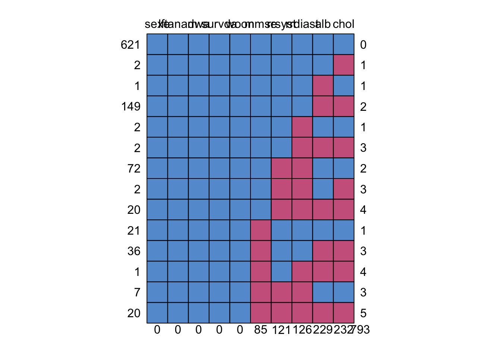
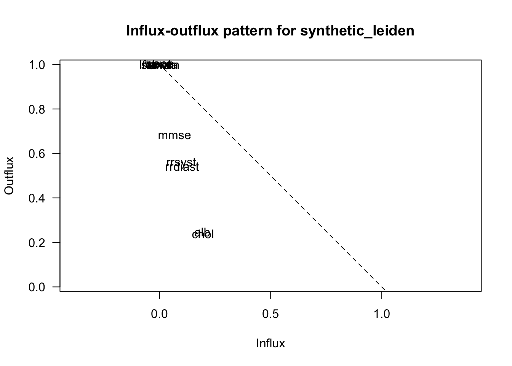
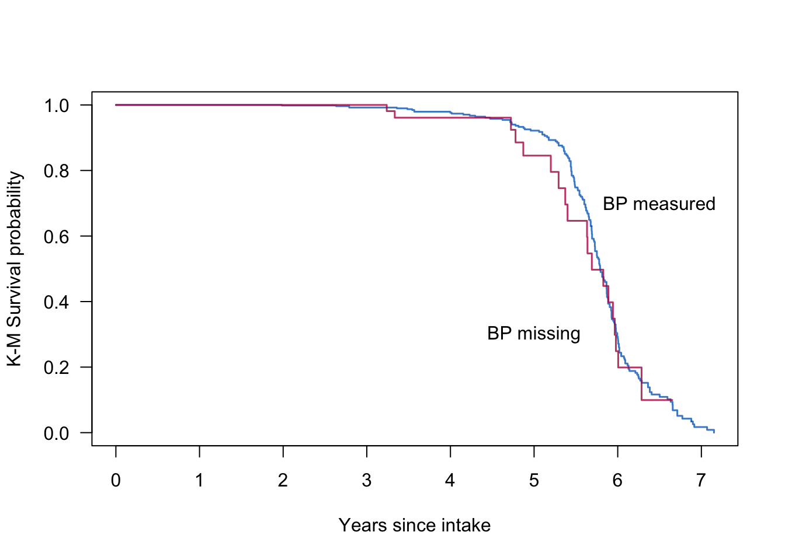
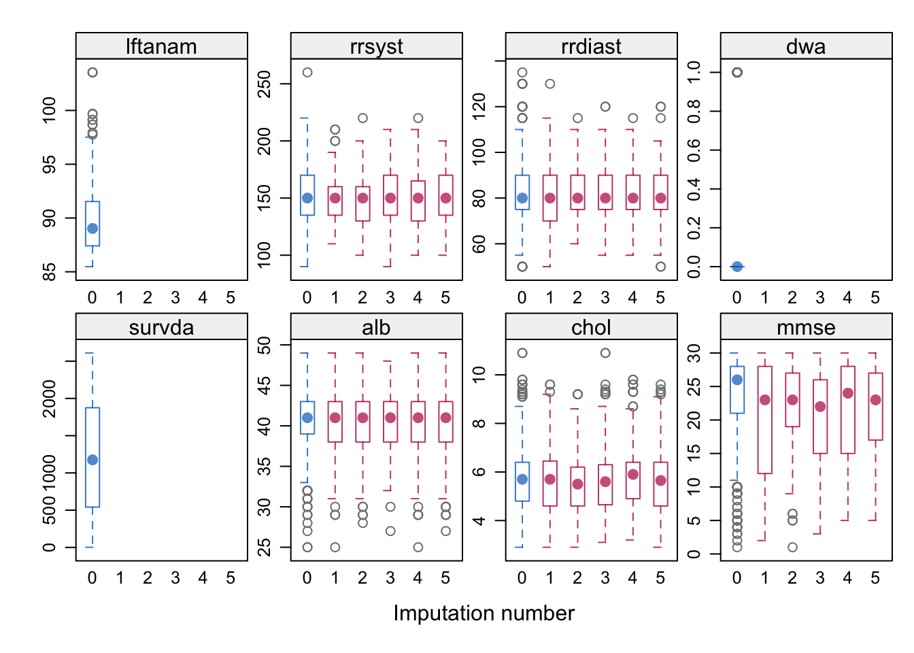
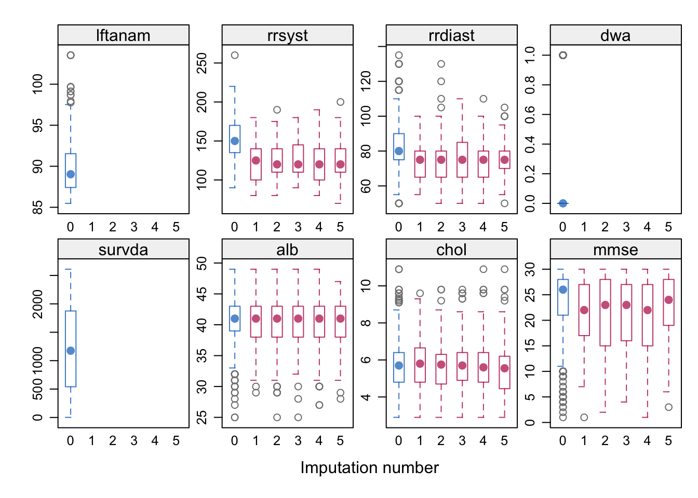
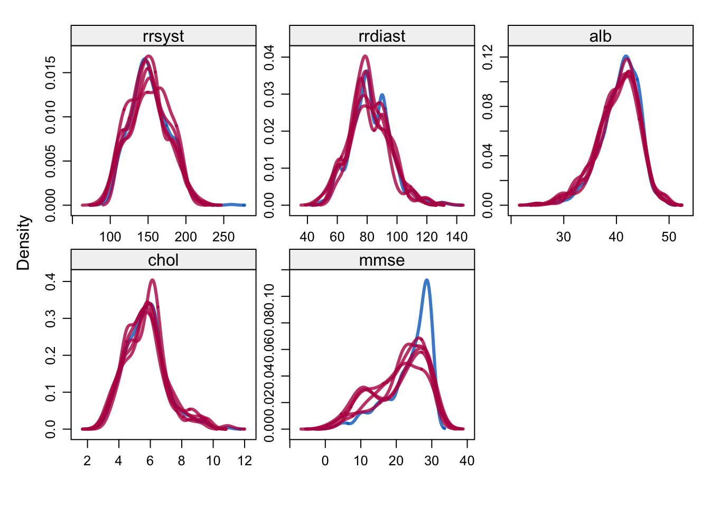
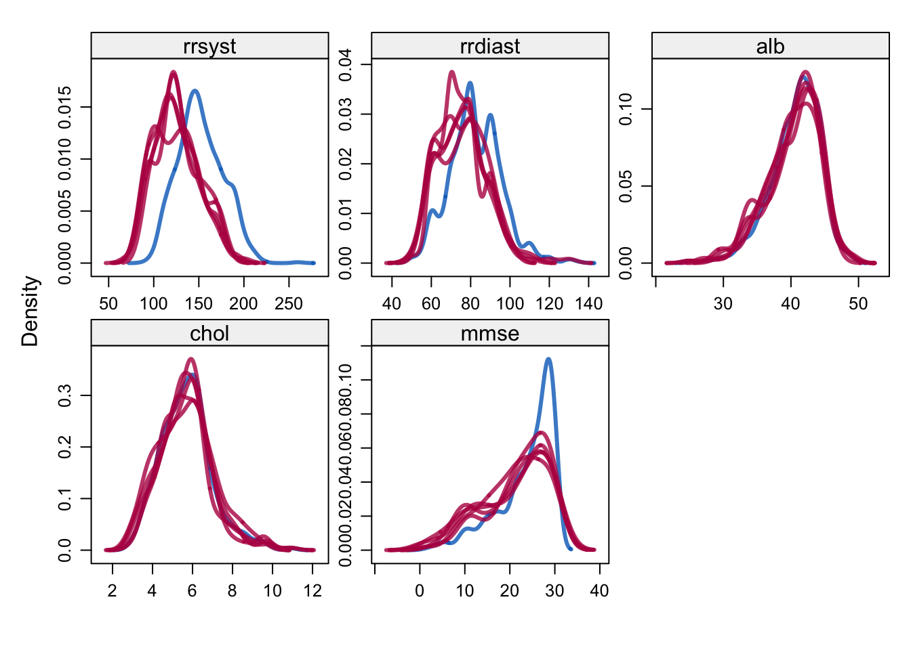
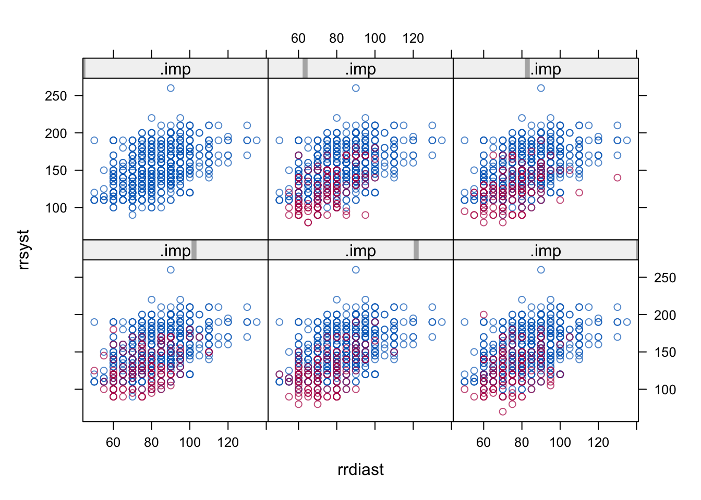

set.seed(123)
library("mice")
library("lattice")
library("survival")mice: An approach to sensitivity analysis
Vignette 7 of 10
This is the seventh vignette in the series.
The focus of this document is on sensitivity analysis in the context of missing data. The goal of sensitivity analysis is to study the influence that violations of the missingness assumptions have on the obtained inference.
Data set
This is a synthetic dataset derived from 956 members of a very old (85+) cohort in Leiden. Unfortunately, we can not share the original leiden dataset with you. Thats why we have provided a synthetic version of leiden dataset. Multiple imputation of original leiden data set has been described in Boshuizen et al (1998), Van Buuren et al (1999) and Van Buuren (2012), chapter 7.
The main question is how blood pressure affects mortality risk in the oldest old. We have reasons to mistrust the MAR assumption in this case. In particular, we worried whether the imputations of blood pressure under MAR would be low enough. The sensitivity analysis explores the effect of artificially lowering the imputed blood pressure by deducting an amount of δ from the values imputed under MAR. In order to preserve the relations between the variables, this needs to be done during the iterations.
1. Open R and load the packages mice, lattice and survival.
2. Overview of data set.
summary(synthetic_leiden) sexe lftanam rrsyst rrdiast dwa
0:672 Min. : 85.48 Min. : 90 Min. : 50.00 Min. :0.0000
1:284 1st Qu.: 87.41 1st Qu.:135 1st Qu.: 75.00 1st Qu.:0.0000
Median : 89.03 Median :150 Median : 80.00 Median :0.0000
Mean : 89.76 Mean :152 Mean : 82.49 Mean :0.2312
3rd Qu.: 91.53 3rd Qu.:170 3rd Qu.: 90.00 3rd Qu.:0.0000
Max. :103.54 Max. :260 Max. :135.00 Max. :1.0000
NA's :121 NA's :126
survda alb chol mmse woon
Min. : 2.0 Min. :25.00 Min. : 2.900 Min. : 1.00 0:399
1st Qu.: 541.5 1st Qu.:39.00 1st Qu.: 4.800 1st Qu.:21.00 1: 35
Median :1175.5 Median :41.00 Median : 5.700 Median :26.00 2: 41
Mean :1188.8 Mean :40.71 Mean : 5.704 Mean :23.76 3:349
3rd Qu.:1875.0 3rd Qu.:43.00 3rd Qu.: 6.400 3rd Qu.:28.00 4:132
Max. :2610.0 Max. :49.00 Max. :10.900 Max. :30.00
NA's :229 NA's :232 NA's :85 str(synthetic_leiden)'data.frame': 956 obs. of 10 variables:
$ sexe : Factor w/ 2 levels "0","1": 1 1 2 1 1 1 1 2 1 1 ...
$ lftanam: num 94.6 87.5 87.3 87 89.6 ...
$ rrsyst : num 160 120 120 180 120 130 170 135 200 160 ...
$ rrdiast: num 90 70 75 95 60 85 90 80 75 70 ...
$ dwa : num 0 0 0 0 0 0 0 0 0 0 ...
$ survda : num 1199 871 905 1035 300 ...
$ alb : num 38 NA 43 44 43 NA 39 NA 43 44 ...
$ chol : num 5.5 NA 4.2 5.3 6.7 NA 6.1 NA 5.3 7.3 ...
$ mmse : num 22 25 29 29 14 NA 28 30 25 14 ...
$ woon : Factor w/ 5 levels "0","1","2","3",..: 4 5 5 1 1 4 1 5 2 4 ...head(synthetic_leiden) sexe lftanam rrsyst rrdiast dwa survda alb chol mmse woon
1 0 94.56 160 90 0 1199 38 5.5 22 3
2 0 87.48 120 70 0 871 NA NA 25 4
3 1 87.32 120 75 0 905 43 4.2 29 4
4 0 87.05 180 95 0 1035 44 5.3 29 0
5 0 89.61 120 60 0 300 43 6.7 14 0
6 0 91.39 130 85 0 926 NA NA NA 3tail(synthetic_leiden) sexe lftanam rrsyst rrdiast dwa survda alb chol mmse woon
951 1 92.30 125 80 0 6 42 2.9 15 0
952 0 94.64 190 80 0 1452 45 5.7 30 3
953 0 93.08 150 95 0 800 34 6.9 21 0
954 0 87.98 140 65 0 587 40 5.4 23 0
955 1 86.43 135 80 0 376 37 5.2 28 0
956 1 86.86 140 80 0 573 44 6.7 16 33. Perform a dry run (using maxit = 0) in mice. List the number of missing values per variable.
ini <- mice(synthetic_leiden, maxit = 0)
sort(ini$nmis) sexe lftanam dwa survda woon mmse rrsyst rrdiast alb chol
0 0 0 0 0 85 121 126 229 232 There are 121 missings (NA’s) for rrsyst, 126 missings for rrdiast, 229 missings for alb, 232 missings for chol and 85 missing values for mmse.
4. Study the missing data pattern in more detail using md.pattern() and fluxplot(). The interest here focusses on imputing systolic blood pressure (rrsyst) and diastolic blood pressure (rrdiast).
md.pattern(synthetic_leiden)
sexe lftanam dwa survda woon mmse rrsyst rrdiast alb chol
621 1 1 1 1 1 1 1 1 1 1 0
2 1 1 1 1 1 1 1 1 1 0 1
1 1 1 1 1 1 1 1 1 0 1 1
149 1 1 1 1 1 1 1 1 0 0 2
2 1 1 1 1 1 1 1 0 1 1 1
2 1 1 1 1 1 1 1 0 0 0 3
72 1 1 1 1 1 1 0 0 1 1 2
2 1 1 1 1 1 1 0 0 1 0 3
20 1 1 1 1 1 1 0 0 0 0 4
21 1 1 1 1 1 0 1 1 1 1 1
36 1 1 1 1 1 0 1 1 0 0 3
1 1 1 1 1 1 0 1 0 0 0 4
7 1 1 1 1 1 0 0 0 1 1 3
20 1 1 1 1 1 0 0 0 0 0 5
0 0 0 0 0 85 121 126 229 232 793fx <- fluxplot(synthetic_leiden)
Variables with higher outflux are (potentially) the more powerful predictors. Variables with higher influx depend stronger on the imputation model. When points are relatively close to the diagonal, it indicates that influx and outflux are balanced.
The variables in the upper left corner have the more complete information, so the number of missing data problems for this group is relatively small. The variables in the middle have an outflux between 0.5 and 0.8, which is small. Missing data problems are thus more severe, but potentially this group could also contain important variables. The lower (bottom) variables have an outflux with 0.5 or lower, so their predictive power is limited. Also, this group has a higher influx, and, thus, depend more highly on the imputation model.
If you’d like this information in tabulated form, you can simply ask
fx pobs influx outflux ainb aout fico
sexe 1.0000000 0.00000000 1.0000000 0.0000000 0.09216643 0.3504184
lftanam 1.0000000 0.00000000 1.0000000 0.0000000 0.09216643 0.3504184
rrsyst 0.8734310 0.09798107 0.5573770 0.7887971 0.05881570 0.2562874
rrdiast 0.8682008 0.10231550 0.5422446 0.7910053 0.05756359 0.2518072
dwa 1.0000000 0.00000000 1.0000000 0.0000000 0.09216643 0.3504184
survda 1.0000000 0.00000000 1.0000000 0.0000000 0.09216643 0.3504184
alb 0.7604603 0.19311053 0.2471627 0.8214459 0.02995568 0.1458047
chol 0.7573222 0.19573400 0.2383354 0.8218391 0.02900552 0.1422652
mmse 0.9110879 0.06798221 0.6796974 0.7790850 0.06875877 0.2870264
woon 1.0000000 0.00000000 1.0000000 0.0000000 0.09216643 0.35041845. The cases with and without blood pressure observed have very different survival rates. Show this.
We can see this easily from the Kaplan-Meier plot.
synthetic_leiden$dwa <- as.numeric(synthetic_leiden$dwa)
km <- survfit(Surv(survda/365, dwa) ~ is.na(rrsyst), data = synthetic_leiden)
plot(km,
lty = 1,
lwd = 1.5,
xlab = "Years since intake",
ylab = "K-M Survival probability", las=1,
col = c(mdc(4), mdc(5)),
mark.time = FALSE)
text(6.5, 0.7, "BP measured")
text(5, 0.3, "BP missing")
In the next steps we are going to impute rrsyst and rrdiast under two scenarios: MAR and MNAR. We will use the delta adjustment technique described in paragraph 7.2.3 in Van Buuren (2012)
6. Create a \(\delta\) vector that represent the following adjustment values for mmHg: 0 for MAR, and -5, -10, -15, and -20 for MNAR.
delta <- c(0, -5, -10, -15, -20)The recipe for creating MNAR imputations for \(\delta \neq 0\) uses the post-processing facility of mice. This allows to change the imputations on the fly by deducting a value of \(\delta\) from the values just imputed.
7. Impute the leiden data using the delta adjustment technique. We only have to deduct from rrsyst, because rrdiast will adapt to the changed rrsyst when it is imputed using rrsyst as predictor. Store the five imputed scenarios (adjustment) in a list called imp.all.
imp.all <- vector("list", length(delta))
post <- ini$post
for (i in 1:length(delta)){
d <- delta[i]
cmd <- paste("imp[[j]][,i] <- imp[[j]][,i] +", d)
post["rrsyst"] <- cmd
imp <- mice(synthetic_leiden, post = post, maxit = 5, seed = i, print = FALSE)
imp.all[[i]] <- imp
}8. Inspect the imputations. Compare the imputations for blood pressure under the most extreme scenarios with a box-and-whiskers plot. Is this as expected?
For the scenario where \(\delta = 0\) we can plot the first object from the list. This object is the mids-object that considers imputations under no adjustment.
bwplot(imp.all[[1]])
For the scenario where \(\delta = -20\) we can plot the fifth object from the list. This object is the mids-object that considers imputations under the largest adjustment.
bwplot(imp.all[[5]])
We can clearly see that the adjustment has an effect on the imputations for rrsyst and, thus, on those for rrdiast.
9. Use the density plot for another inspection.
For the scenario where\(\delta = 0\) we can plot the first object from the list. This object is the mids-object that considers imputations under no adjustment.
densityplot(imp.all[[1]], lwd = 3)
For the scenario where \(\delta = -20\) we can plot the fifth object from the list. This object is the mids-object that considers imputations under the largest adjustment.
densityplot(imp.all[[5]], lwd = 3)
We can once more clearly see that the adjustment has an effect on the imputations for rrsyst and, thus, on those for rrdiast.
10. Also create a scatter plot of rrsyst and rrdiast by imputation number and missingness.
xyplot(imp.all[[1]], rrsyst ~ rrdiast | .imp)
xyplot(imp.all[[5]], rrsyst ~ rrdiast | .imp)
The scatter plot comparison between rrsyst and rrdiast shows us that the adjustment has an effect on the imputations and that the imputations are lower for the situation where \(\delta = -20\).
We are now going to perform a complete-data analysis. This involves several steps:
- Create two categorical variables sbpgp and agegp that divide the observations into groups based on, respectively, systolic blood pressure and age.
- Calculate whether person died or not.
- Fit a Cox proportional hazards model to estimate the relative mortality risk corrected for sex and age group.
In order to automate this step we should create an expression object that performs these stepd for us. The following object does so:
cda <- expression(
sbpgp <- cut(rrsyst, breaks = c(50, 124, 144, 164, 184, 200, 500)),
agegp <- cut(lftanam, breaks = c(85, 90, 95, 110)),
dead <- 1 - dwa,
coxph(Surv(survda, dead) ~ C(sbpgp, contr.treatment(6, base = 3)) + strata(sexe, agegp))
)See Van Buuren (2012, pp.186) for more information.
11. Create five fit objects that run the expression cda on the five imputed adjustment scenarios. Use function with().
fit1 <- with(imp.all[[1]], cda)
fit2 <- with(imp.all[[2]], cda)
fit3 <- with(imp.all[[3]], cda)
fit4 <- with(imp.all[[4]], cda)
fit5 <- with(imp.all[[5]], cda)Each fit object contains the five imputed Cox proportional hazards models for the adjustment scenario at hand. For example, the \(\delta=-10\) scenario is contained in fit3.
fit3call :
with.mids(data = imp.all[[3]], expr = cda)
call1 :
mice(data = synthetic_leiden, post = post, maxit = 5, printFlag = FALSE,
seed = i)
nmis :
sexe lftanam rrsyst rrdiast dwa survda alb chol mmse woon
0 0 121 126 0 0 229 232 85 0
analyses :
[[1]]
Call:
coxph(formula = Surv(survda, dead) ~ C(sbpgp, contr.treatment(6,
base = 3)) + strata(sexe, agegp))
coef exp(coef) se(coef) z
C(sbpgp, contr.treatment(6, base = 3))1 0.48788 1.62886 0.11376 4.289
C(sbpgp, contr.treatment(6, base = 3))2 0.27687 1.31899 0.10209 2.712
C(sbpgp, contr.treatment(6, base = 3))4 0.15158 1.16367 0.11738 1.291
C(sbpgp, contr.treatment(6, base = 3))5 0.02372 1.02401 0.14105 0.168
C(sbpgp, contr.treatment(6, base = 3))6 -0.21825 0.80392 0.34220 -0.638
p
C(sbpgp, contr.treatment(6, base = 3))1 1.8e-05
C(sbpgp, contr.treatment(6, base = 3))2 0.00669
C(sbpgp, contr.treatment(6, base = 3))4 0.19660
C(sbpgp, contr.treatment(6, base = 3))5 0.86644
C(sbpgp, contr.treatment(6, base = 3))6 0.52362
Likelihood ratio test=22.93 on 5 df, p=0.000348
n= 956, number of events= 735
[[2]]
Call:
coxph(formula = Surv(survda, dead) ~ C(sbpgp, contr.treatment(6,
base = 3)) + strata(sexe, agegp))
coef exp(coef) se(coef) z
C(sbpgp, contr.treatment(6, base = 3))1 0.39924 1.49070 0.11408 3.500
C(sbpgp, contr.treatment(6, base = 3))2 0.37326 1.45246 0.10195 3.661
C(sbpgp, contr.treatment(6, base = 3))4 0.13042 1.13930 0.11917 1.094
C(sbpgp, contr.treatment(6, base = 3))5 0.05550 1.05707 0.14221 0.390
C(sbpgp, contr.treatment(6, base = 3))6 -0.07855 0.92446 0.34216 -0.230
p
C(sbpgp, contr.treatment(6, base = 3))1 0.000466
C(sbpgp, contr.treatment(6, base = 3))2 0.000251
C(sbpgp, contr.treatment(6, base = 3))4 0.273796
C(sbpgp, contr.treatment(6, base = 3))5 0.696353
C(sbpgp, contr.treatment(6, base = 3))6 0.818434
Likelihood ratio test=20.93 on 5 df, p=0.0008343
n= 956, number of events= 735
[[3]]
Call:
coxph(formula = Surv(survda, dead) ~ C(sbpgp, contr.treatment(6,
base = 3)) + strata(sexe, agegp))
coef exp(coef) se(coef) z
C(sbpgp, contr.treatment(6, base = 3))1 0.42758 1.53355 0.11396 3.752
C(sbpgp, contr.treatment(6, base = 3))2 0.29895 1.34844 0.10246 2.918
C(sbpgp, contr.treatment(6, base = 3))4 0.16385 1.17804 0.11712 1.399
C(sbpgp, contr.treatment(6, base = 3))5 0.03112 1.03161 0.14253 0.218
C(sbpgp, contr.treatment(6, base = 3))6 -0.09107 0.91296 0.34192 -0.266
p
C(sbpgp, contr.treatment(6, base = 3))1 0.000175
C(sbpgp, contr.treatment(6, base = 3))2 0.003525
C(sbpgp, contr.treatment(6, base = 3))4 0.161801
C(sbpgp, contr.treatment(6, base = 3))5 0.827175
C(sbpgp, contr.treatment(6, base = 3))6 0.789979
Likelihood ratio test=18.6 on 5 df, p=0.002282
n= 956, number of events= 735
[[4]]
Call:
coxph(formula = Surv(survda, dead) ~ C(sbpgp, contr.treatment(6,
base = 3)) + strata(sexe, agegp))
coef exp(coef) se(coef) z
C(sbpgp, contr.treatment(6, base = 3))1 0.396511 1.486629 0.114339 3.468
C(sbpgp, contr.treatment(6, base = 3))2 0.307997 1.360697 0.101600 3.031
C(sbpgp, contr.treatment(6, base = 3))4 0.153366 1.165752 0.116203 1.320
C(sbpgp, contr.treatment(6, base = 3))5 0.006772 1.006795 0.142059 0.048
C(sbpgp, contr.treatment(6, base = 3))6 -0.100275 0.904588 0.341764 -0.293
p
C(sbpgp, contr.treatment(6, base = 3))1 0.000525
C(sbpgp, contr.treatment(6, base = 3))2 0.002434
C(sbpgp, contr.treatment(6, base = 3))4 0.186897
C(sbpgp, contr.treatment(6, base = 3))5 0.961979
C(sbpgp, contr.treatment(6, base = 3))6 0.769212
Likelihood ratio test=17.9 on 5 df, p=0.00307
n= 956, number of events= 735
[[5]]
Call:
coxph(formula = Surv(survda, dead) ~ C(sbpgp, contr.treatment(6,
base = 3)) + strata(sexe, agegp))
coef exp(coef) se(coef) z
C(sbpgp, contr.treatment(6, base = 3))1 0.40865 1.50479 0.11365 3.596
C(sbpgp, contr.treatment(6, base = 3))2 0.28764 1.33328 0.10079 2.854
C(sbpgp, contr.treatment(6, base = 3))4 0.14105 1.15148 0.11677 1.208
C(sbpgp, contr.treatment(6, base = 3))5 0.01149 1.01156 0.14236 0.081
C(sbpgp, contr.treatment(6, base = 3))6 -0.10340 0.90177 0.34168 -0.303
p
C(sbpgp, contr.treatment(6, base = 3))1 0.000323
C(sbpgp, contr.treatment(6, base = 3))2 0.004320
C(sbpgp, contr.treatment(6, base = 3))4 0.227072
C(sbpgp, contr.treatment(6, base = 3))5 0.935670
C(sbpgp, contr.treatment(6, base = 3))6 0.762181
Likelihood ratio test=17.79 on 5 df, p=0.003218
n= 956, number of events= 735 12. Pool the results for each of the five scenarios.
r1 <- as.vector(t(exp(summary(pool(fit1))[, c(2)])))
r2 <- as.vector(t(exp(summary(pool(fit2))[, c(2)])))
r3 <- as.vector(t(exp(summary(pool(fit3))[, c(2)])))
r4 <- as.vector(t(exp(summary(pool(fit4))[, c(2)])))
r5 <- as.vector(t(exp(summary(pool(fit5))[, c(2)])))
summary(pool(fit1)) term estimate std.error statistic
1 C(sbpgp, contr.treatment(6, base = 3))1 0.384561979 0.1210874 3.17590376
2 C(sbpgp, contr.treatment(6, base = 3))2 0.273964679 0.1137322 2.40885787
3 C(sbpgp, contr.treatment(6, base = 3))4 0.101681327 0.1146571 0.88682971
4 C(sbpgp, contr.treatment(6, base = 3))5 0.003223223 0.1372274 0.02348819
5 C(sbpgp, contr.treatment(6, base = 3))6 -0.117472167 0.3319156 -0.35392175
df p.value
1 307.39511 0.001645321
2 78.83454 0.018335658
3 720.90741 0.375466336
4 626.37618 0.981268339
5 568.42823 0.723528764This code grabs the information from the tabulated pooled results that are produced by summary. In order to make sense about these numbers, and to see what exactly is extracted in the above code, laying out the numbers in a proper table may be useful.
pars <- round(t(matrix(c(r1,r2,r3,r4,r5), nrow = 5)),2)
pars <- pars[, c(1, 2, 5)]
dimnames(pars) <- list(delta, c("<125", "125-140", ">200"))
pars <125 125-140 >200
0 1.47 1.32 0.89
-5 1.52 1.36 0.91
-10 1.53 1.36 0.89
-15 1.50 1.39 0.91
-20 1.58 1.37 0.92All in all, it seems that even big changes to the imputations (e.g. deducting 20 mmHg) has little influence on the results. This suggests that the results are stable relatively to this type of MNAR-mechanism.
13. Perform sensitivity analysis analysis on the mammalsleep dataset by adding and subtracting some amount from the imputed values for sws. Use delta <- c(8, 6, 4, 2, 0, -2, -4, -6, -8) and investigating the influence on the following regression model:
lm(sws ~ log10(bw) + odi, data = mammalsleep)Sensitivity analysis is an important tool for investigating the plausibility of the MAR assumption. We again use the \(\delta\)-adjustment technique described in Van Buuren (2012, p. 185) as an informal, simple and direct method to create imputations under nonignorable models. We do so by simply adding and substracting some amount from the imputations.
delta <- c(8, 6, 4, 2, 0, -2, -4, -6, -8)
ini <- mice(mammalsleep[, -1], maxit=0, print=F)
meth<- ini$meth
meth["ts"]<- "~ I(sws + ps)"
pred <- ini$pred
pred[c("sws", "ps"), "ts"] <- 0
post <- ini$post
imp.all.undamped <- vector("list", length(delta))
for (i in 1:length(delta)) {
d <- delta[i]
cmd <- paste("imp[[j]][, i] <- imp[[j]][, i] +", d)
post["sws"] <- cmd
imp <- mice(mammalsleep[, -1], meth=meth, pred=pred, post = post, maxit = 10, seed = i * 22, print=FALSE)
imp.all.undamped[[i]] <- imp
}
output <- sapply(imp.all.undamped, function(x) pool(with(x, lm(sws ~ log10(bw) + odi)))$pooled$estimate)
rownames(output) <- summary(pool(with(imp.all.undamped[[1]], lm(sws ~ log10(bw) + odi))))$term
cbind(delta, as.data.frame(t(output))) delta (Intercept) log10(bw) odi
1 8 13.38503 -0.1349983 -1.1122847
2 6 12.96965 -0.2546588 -1.1249810
3 4 12.47611 -0.6279854 -0.9881585
4 2 12.18507 -0.8777009 -1.0337294
5 0 11.79013 -0.9135497 -0.9815233
6 -2 11.16237 -1.4025229 -0.8425622
7 -4 10.78238 -1.6825684 -0.8408006
8 -6 10.55405 -1.8748218 -0.8283291
9 -8 10.10635 -2.1090423 -0.8664012The estimates for different \(\delta\) are not close. A clear trend for the estimates for the intercept and for bw emerges. Thus, the results are not essentially the same under all specified mechanisms and the outcomes can be deemed sensitive to the assumed mechanism.
However, in this scenario, the \(\delta\) adjustment is completely unrealistic. If we look at the descriptive information for observed sws
summary(mammalsleep$sws) Min. 1st Qu. Median Mean 3rd Qu. Max. NA's
2.100 6.250 8.350 8.673 11.000 17.900 14 we find that even our smallest adjustment (\(\delta=|2|\)) already makes up almost a quarter of the average sws. Choosing unreasonably large values may always influence your estimates. Therefore; choosing values that are reasonable given your suspicions of an assumed breach of the MAR assumption is vital.
We only used a shift parameter here. In other applications, scale or shape parameters could be more natural (see e.g. Van Buuren (2012), Ch. 3.9.1). The calculations are easily adapted to such cases.
Conclusion
We have seen that we can create multiple imputations in multivariate missing data problems that imitate deviations from MAR. The analysis used the post argument of the mice() function as a hook to alter the imputations just after they have been created by a univariate imputation function. The diagnostics shows that the trick works. The relative mortality estimates are however robust to this type of alteration.
References
Van Buuren, S. (2012), Flexible Imputation of Missing Data. Chapman & Hall/CRC, Boca Raton, FL. ISBN 9781439868249. CRC Press, Amazon.
- End of Vignette